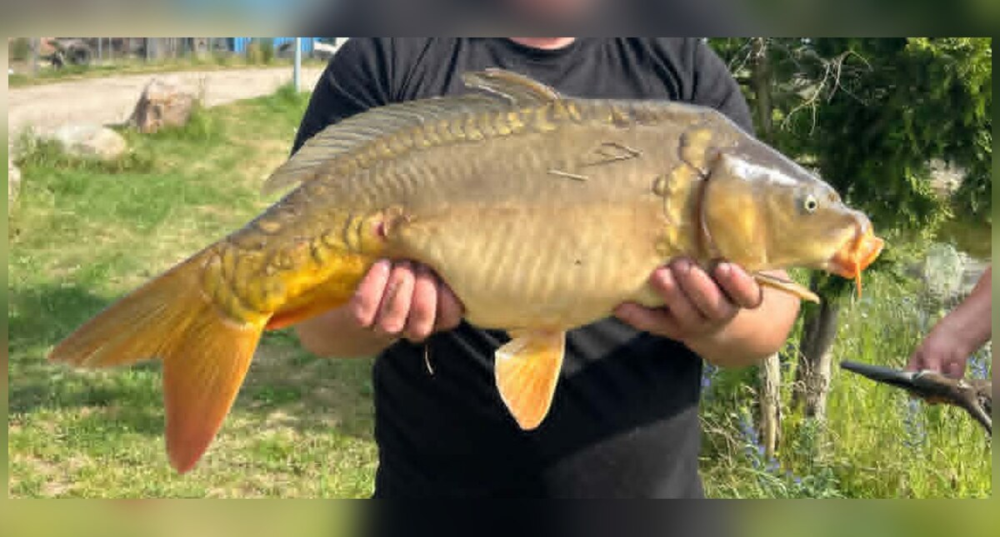

Rozpoznawanie i biologia
Wygląd i rozpoznawanie
Karp (Cyprinus carpio) to masywna ryba karpiowata o wysokim, bocznie ścieśnionym ciele, dużej głowie i charakterystycznym, wysuwalnym otworze gębowym z dwiema parami wąsików — to one najpewniej odróżniają go od podobnych gatunków. Płetwa grzbietowa jest długa, z mocnym, piłkowanym promieniem twardym na początku. W polskich wodach spotyka się kilka form hodowlanych: karpia pełnołuskiego, lustrzenia z nieregularnymi, dużymi łuskami, lince z rzędem łusek wzdłuż linii bocznej oraz rzadkiego golca, niemal pozbawionego łusek. Ubarwienie zależy od środowiska — od złocistobrązowego po oliwkowe. Karp bywa mylony z karasiem srebrzystym i pospolitym, jednak karasie nie mają wąsików, a z dużym amurem, który z kolei ma ciało walcowate, niską płetwę grzbietową i również pozbawiony jest wąsików. Dzika forma, sazan, jest smuklejsza i niżej wygrzbiecona niż formy stawowe.
Środowisko i występowanie w Polsce
Karp pierwotnie pochodzi ze zlewiska mórz Czarnego, Kaspijskiego i Aralskiego, a w Europie Środkowej upowszechnił się dzięki wielowiekowej hodowli stawowej, w Polsce sięgającej co najmniej średniowiecza i tradycji klasztornych. Dziś występuje praktycznie w całym kraju: w jeziorach, zbiornikach zaporowych, gliniankach, starorzeczach oraz wolno płynących, dolnych odcinkach rzek. Populacje w wodach otwartych w dużej mierze utrzymywane są zarybieniami, ponieważ naturalne tarło w naszym klimacie udaje się nieregularnie. Karp preferuje wodę ciepłą, żyzną, z miękkim dnem mulistym lub gliniastym, bogatym w organizmy denne, oraz strefy roślinności podwodnej. Unika wód zimnych, kwaśnych i silnie natlenionych rzek górskich. Najliczniejszy jest w zbiornikach nizinnych oraz na łowiskach specjalnie pod niego prowadzonych.
Biologia i tarło
Karp dojrzewa płciowo zwykle w wieku trzech do pięciu lat, przy czym samce wcześniej niż samice. Tarło odbywa się późną wiosną i wczesnym latem, najczęściej od maja do końca czerwca, gdy woda osiągnie około 17–20 stopni Celsjusza. Ikra składana jest na płyciznach porośniętych roślinnością, często na zalanych łąkach i trawiastych brzegach, a samica potrafi złożyć kilkaset tysięcy ziaren ikry na kilogram masy ciała. W chłodne lata tarło w wodach otwartych bywa nieskuteczne, a wyląg ginie przy spadkach temperatury — stąd zależność wielu łowisk od zarybień. Karp rośnie szybko w wodach żyznych i ciepłych, osiągając w dobrych warunkach kilkanaście kilogramów, a żyje kilkadziesiąt lat. Znane są osobniki łowione wielokrotnie przez wiele sezonów na tych samych łowiskach.
Żerowanie według pór roku
Karp jest typowym żerownikiem dennym o szerokim spektrum pokarmowym: zjada larwy ochotek, skąposzczety, mięczaki, skorupiaki, a także pokarm roślinny i detrytus. Wiosną, po przegrzaniu płycizn, zaczyna intensywnie żerować na płytkiej, szybko nagrzewającej się wodzie, często przy trzcinowiskach. Latem żeruje najintensywniej, choć w upały przenosi aktywność na noc, świt i zmierzch oraz w rejony głębsze lub zacienione. Jesienią, wraz z ochłodzeniem, żeruje krócej, ale bywa mniej wybredny i chętniej pobiera pokarm wysokoenergetyczny, gromadząc rezerwy przed zimą. Zimą metabolizm karpia drastycznie zwalnia; ryby grupują się w zimowiskach i pobierają pokarm sporadycznie, choć na zbiornikach o łagodnych zimach notuje się pojedyncze brania w cieplejsze, słoneczne okresy. Znajomość tego cyklu pozwala sensownie planować wyjazdy, ale nie przesądza o wyniku połowu.

Przepisy i ochrona
Przepisy krajowe i zasady lokalne
Przepisy krajowe: Wody śródlądowe: § 6–7 nie ustanawia krajowego wymiaru ani okresu; sprawdź zasady lokalne. Źródło: Dz.U. 2023 poz. 1373, § 6–7
Granica okresu ochronnego: jeżeli pierwszy lub ostatni dzień okresu przypada w dzień ustawowo wolny od pracy, okres skraca się o ten dzień (§ 7 ust. 2); wyjątkiem jest całoroczna ochrona jesiotra.
Przed połowem: sprawdź aktualny regulamin i zezwolenie dla konkretnej wody. Wymiar, okres, limit lub zakaz lokalny może być ostrzejszy; brak wartości krajowej nie oznacza zgody na zabranie ryby.
Metody, taktyka i sprzęt
Metody i przynęty: grunt, feeder, spławik
Podstawą połowu karpia są metody gruntowe. Klasyczny zestaw karpiowy to ciężki ciężarek (zwykle 70–120 g), krótki przypon z plecionki lub materiału powlekanego i przynęta prezentowana na włosie — najczęściej kulka proteinowa, pellet, ziarno kukurydzy lub tygrysiego orzecha. Metoda włosowa pozwala na pewne zacięcie się ryby o ciężar przy zachowaniu naturalnej prezentacji. Feeder, w tym method feeder z koszykiem oblepianym zanętą, doskonale sprawdza się na dystansie do kilkudziesięciu metrów i przy rybie ostrożnej. Spławik pozostaje skuteczny przy brzegowych żerowiskach, na płyciznach i przy trzcinach, zwłaszcza z ciężką tyczką lub mocną odległościówką. Z przynęt naturalnych skuteczne bywają kukurydza, robaki, ziemniak (tradycyjnie) oraz ziarna przygotowywane na ciepło; w nowoczesnym karpiarstwie dominują kulki o różnych profilach smakowych oraz przynęty zbalansowane i pop-upy.

Taktyka łowienia i nęcenie
Skuteczna taktyka zaczyna się od znalezienia żerowiska: stoków, przegłębień przy płyciznach, twardych placków dna wśród mułu, podwodnych górek i stref przy roślinności. Pomocne są sondowanie markerem, echosonda lub uważna obserwacja — żerujący karp często zdradza się skokami i pęcherzami unoszącymi się z dna. Nęcenie warto prowadzić z wyprzedzeniem i konsekwentnie: mieszanki ziaren (kukurydza, konopie, pszenica), pellet i kulki podawane regularnie w to samo miejsce budują zaufanie ryb do punktu. Na krótkich zasiadkach lepsze bywa nęcenie punktowe, niewielkimi porcjami, niż zasypywanie łowiska. Ilość zanęty należy dostosować do temperatury wody — zimą i wczesną wiosną kilkadziesiąt razy mniej niż latem. Po zacięciu duży karp wykonuje długie, mocne odjazdy, więc sprzęt musi mieć zapas mocy, a hamulec kołowrotka powinien być ustawiony przed zarzuceniem. Żadna taktyka nie gwarantuje brań — daje jedynie statystyczną przewagę.
Rekordy, kuchnia i ciekawostki
Rekordy Polski — orientacyjnie
Rejestry wędkarskie notują w Polsce karpie o masie ponad 30 kg, a rekordowe okazy z rejestrów i prasy wędkarskiej oscylują wokół 30 i więcej kilogramów, przy długościach przekraczających metr. Trzeba przy tym pamiętać, że dane rekordowe pochodzą z różnych źródeł — oficjalnych rejestrów PZW, konkursów prasowych i łowisk komercyjnych — i bywają trudne do jednoznacznej weryfikacji, zwłaszcza przy rybach ważonych w różnych warunkach. Ryby dwucyfrowe, powyżej 10 kg, są dziś na wielu łowiskach realnym, choć wymagającym celem, a okazy powyżej 20 kg pozostają wyjątkowe. Największe karpie pochodzą zwykle z żyznych zbiorników zaporowych, jezior intensywnie zarybianych oraz łowisk specjalnych prowadzonych w reżimie „złów i wypuść”, gdzie te same ryby przybierają na wadze przez lata.
Wartość kulinarna i zasady C&R
Karp to ryba o smacznym, choć dość tłustym mięsie, obarczonym jednak licznymi drobnymi ośćmi widlastymi, co wymaga starannego filetowania lub nacinania filetów. W Polsce ma wyjątkowy status kulturowy jako tradycyjna potrawa wigilijna, a większość karpi konsumpcyjnych pochodzi z hodowli stawowych, nie z połowów wędkarskich. Współczesne karpiarstwo sportowe opiera się natomiast niemal w całości na zasadzie „złów i wypuść”. Obowiązujący standard to: mata karpiowa amortyzująca rybę na brzegu, mokre ręce, możliwie krótki czas przebywania ryby poza wodą, środek dezynfekujący do ranek po haczyku oraz solidny podbierak i worek do ważenia. Rybę wypuszcza się podtrzymując ją w wodzie do momentu, aż sama odpłynie. Jeśli zamierzasz zabrać karpia do spożycia, rób to wyłącznie w granicach wymiarów i limitów obowiązujących na danej wodzie i uśmiercaj rybę humanitarnie, zgodnie z regulaminem.

Ciekawostki
Karp jest jednym z najdłużej hodowanych gatunków ryb na świecie — jego udomowienie w Azji i Europie liczy sobie wiele stuleci, a polskie stawy karpiowe, między innymi w dolinie Baryczy i okolicach Zatora, należą do najstarszych i największych w Europie. Karp zaliczany jest do ryb o zaskakująco dobrej pamięci i zdolności uczenia się: na mocno eksploatowanych łowiskach ryby wyraźnie ostrożniej traktują popularne przynęty i zestawy. Potrafi pobierać pokarm „smakując” go w pysku i wypluwając podejrzane obiekty, co stało się impulsem do wynalezienia przyponu włosowego w latach siedemdziesiątych XX wieku. W sprzyjających warunkach karp dożywa kilkudziesięciu lat, a niektóre znane okazy z europejskich łowisk były łowione i wypuszczane przez kolejne pokolenia wędkarzy. Forma dzika, sazan, uznawana jest za znacznie waleczniejszą od ryb stawowych.
FAQ — najczęstsze pytania
Czy karpia można łowić nocą?
Na wielu wodach PZW połów nocny jest dozwolony, jednak część okręgów i łowisk specjalnych wprowadza ograniczenia czasowe lub wymaga dodatkowych zezwoleń na zasiadki nocne i biwakowanie. Zasady oświetlenia stanowiska i oznaczenia łowiska również bywają regulowane lokalnie. Przed nocną zasiadką zawsze sprawdź regulamin okręgu i warunki zezwolenia na konkretną wodę.
Jaki zestaw dla początkującego karpiarza?
Rozsądny punkt wyjścia to wędzisko karpiowe o długości około 3,6 m i krzywej ugięcia 2,75–3 lb, kołowrotek o rozmiarze 6000–10000 z wolnym biegiem lub dobrze pracującym hamulcem, żyłka 0,30–0,35 mm i gotowe przypony włosowe z haczykami nr 4–8. Do tego ciężarki 80–100 g, mata, podbierak o dużym koszu i podstawowa zanęta ziarnowa. Taki komplet pozwala łowić bezpiecznie dla ryby i komfortowo dla wędkarza na większości wód.
Czy kulki proteinowe są lepsze od kukurydzy?
Żadna przynęta nie jest uniwersalnie lepsza. Kulki proteinowe selekcjonują większe ryby i dobrze opierają się drobnicy oraz rakom, natomiast kukurydza jest tania, naturalna dla ryb regularnie nęconych ziarnem i często skuteczniejsza na wodach mniej presjonowanych. W praktyce dobrze sprawdza się łączenie obu, na przykład kulka zbalansowana ze sztucznym lub naturalnym ziarnem na włosie, oraz dopasowanie przynęty do tego, czym nęcisz.
Czy każdego złowionego karpia trzeba wypuścić?
§ 6–7 rozporządzenia Dz.U. 2023 poz. 1373 nie ustanawia dla karpia krajowego wymiaru ani okresu ochronnego. O tym, czy rybę można zabrać, rozstrzygają zezwolenie, regulamin i komunikaty gospodarza danej wody; mogą wprowadzać dodatkowe, ostrzejsze warunki, lecz nie zastępują aktu. Wypuszczanie okazów jest praktyką redakcyjną wspierającą jakość łowiska.
Źródła i weryfikacja
Prawo: punktem wyjścia dla krajowych wymiarów i okresów ochronnych w powierzchniowych wodach śródlądowych jest § 6–7 rozporządzenia Dz.U. 2023 poz. 1373 (źródło zweryfikowano 2026-07-20). Przed połowem sprawdź zezwolenie, regulamin i komunikaty gospodarza tej wody; mogą wprowadzać dodatkowe, ostrzejsze warunki, lecz nie zastępują aktu. Praktyka redakcyjna: opis metod i taktyki ma charakter edukacyjny.
Tożsamość biologiczna i źródła
Nazwa łacińska: Cyprinus carpio. Grupa atlasu: spokojny żer. Alias: karp europejski.
Źródła: FishBase: Cyprinus carpioGBIF: Cyprinus carpioIUCN Red List: Cyprinus carpio. Dostęp: 2026-07-17. Zakres: tożsamość taksonomiczna i nazewnictwo oraz, gdy wskazano, ocena ochrony; bez potwierdzenia lokalnego występowania, stanu łowiska ani zasad połowu.
Porównanie taksonomiczne
Porównaj z kartą Amur biały. Obie karty prowadzą do osobnych rekordów źródłowych; porównanie nie jest kluczem oznaczania w terenie ani gwarancją wyniku połowu.